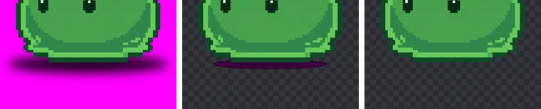
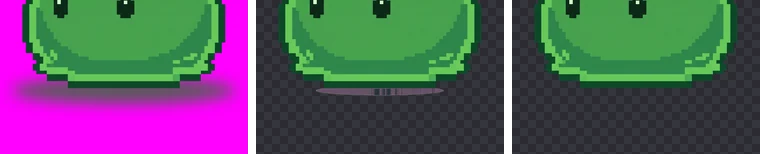

그림자가 남을 때: 배경 제거 문제 해결
AI에게 캐릭터를 세워서 그리게 하면 발밑에 그림자를 그려 넣는 경우가 많습니다. 배경을 지웠는데 발밑에 검은 타원이 남았다면 이 글을 보세요. 그림자의 진하기와 색을 바꿔 가며 실험해 보니, 대부분의 그림자는 기본 설정으로 지워졌고 남는 그림자에는 분명한 조건이 있었습니다.
그림자는 ‘어두워진 배경색’이다
단색 배경 위의 그림자는 대개 배경색을 어둡게 만든 색입니다. 마젠타 배경이라면 그림자는 진한 자주색이고, 가장 진한 곳으로 갈수록 검정에 가까워집니다. BGPeel은 배경과 이어진 빛번짐을 지울 때 세 가지를 봅니다. 색상이 배경색과 가까운지, 채도가 충분한지(‘글로우 최소 채도’, 기본 0.3), 너무 어둡지 않은지(‘글로우 최소 밝기’, 기본 80)입니다. 세 조건을 모두 만족하면서 배경과 이어진 픽셀은 배경으로 지웁니다. 마지막 조건은 도트 그림의 검은 외곽선을 지키기 위한 장치인데, 바로 이 조건 때문에 아주 진한 그림자는 외곽선처럼 남습니다.
실험: 그림자 진하기를 바꿔 가며
슬라임과 식물 몬스터의 배경을 지운 결과를 다시 마젠타 배경에 얹고, 발밑에 흐릿한 타원 그림자를 그려 넣었습니다. AI가 그린 그림자를 흉내 낸 실험용 그림자로, 진하기를 세 단계로 바꿨습니다. 가장 진한 곳의 밝기(RGB 중 가장 큰 값)는 각각 159, 87, 51이었습니다. 그리고 기본 설정으로 지운 뒤, 그림자 영역 중 남은 비율을 쟀습니다.
| 그림자 (가장 진한 곳 밝기) | 슬라임: 남은 그림자 | 식물: 남은 그림자 |
|---|---|---|
| 옅음 (159) | 0% | 0% |
| 중간 (87) | 0% | 0% |
| 진함 (51) | 18.8% | 24.0% |
옅은 그림자와 중간 그림자는 기본 설정으로 흔적 없이 지워졌습니다. 진한 그림자는 가운데 부분이 밝기 80보다 어두워 외곽선으로 판정되었고, 그림자 영역의 18.8~24.0%가 완전히 불투명한 검은 타원으로 남았습니다. 정리하면 기준은 단순합니다. 그림자에서 가장 진한 곳이 밝기 80보다 밝으면 남지 않았고, 그보다 어두운 부분만 남았습니다. 그래서 내 이미지의 그림자가 남을지는 가장 진한 곳의 색만 재 봐도 짐작할 수 있습니다.

해결: ‘글로우 최소 밝기’를 80에서 30으로 내리자 두 캐릭터 모두 그림자가 0% 남았습니다. 대신 슬라임은 바닥 외곽선 일부가 함께 지워져 몸의 0.17%를 잃었고, 식물은 손실이 없었습니다. 외곽선이 어두운 그림일수록 이 값을 많이 내리면 외곽선이 끊기니, 그림자가 사라지는 지점에서 멈추세요. 이 값은 ‘쨍한 단색’ 배경에서만 쓰입니다.
반대로 배경 종류를 ‘탁한·연한 단색’으로 바꾸는 것은 도움이 되지 않았습니다. 이 방식은 배경색과의 차이만 보기 때문에 그림자를 ‘배경과 다른 색’, 즉 물체로 판단해 오히려 그림자의 55~86%가 남았습니다.
실험: 회색 그림자
AI가 그리는 그림자가 늘 배경색을 어둡게 한 색은 아닙니다. 배경색과 상관없는 회색이나 검정으로 칠하기도 합니다. 그래서 그림자 색을 회색 쪽으로 섞은 경우도 실험했습니다. 회색이 섞일수록 채도가 떨어지는데, 회색을 많이 섞은 두 경우에서 그림자에서 가장 채도가 낮은 픽셀은 각각 0.25, 0.15로 기본 기준 0.3보다 낮았습니다.

기본 설정에서는 회색이 덜 섞인 경우 그림자가 전부 지워졌지만, 많이 섞인 두 경우는 그림자 영역의 6.3%와 11.8%가 남았습니다. 해결: ‘글로우 최소 채도’를 0.3에서 0.05로 내리자 두 경우 모두 0% 남았고 물체 손실도 없었습니다. 이 값을 내리면 배경과 맞닿은 물체의 회색빛 부분(쇠 갑옷, 돌 같은)도 지워질 수 있으니 결과를 확인하세요.
한계도 있습니다. 채도가 완전히 0인 순수한 회색·검정은 색상이 없어서 배경과 같은 계열인지 판단할 수 없습니다. 그래서 어떤 설정으로도 빛번짐으로 지울 수 없습니다. 그림자 한가운데가 완전한 무채색이라면 다시 만들거나 그림 도구로 지워야 합니다.
이 실험의 한계
실험에 쓴 그림자는 색이 고르게 번지는 매끈한 타원입니다. 실제 AI 그림의 그림자에는 얼룩과 무늬가 섞이고, 그림자 아래에 바닥 타일, 풀, 흙 같은 ‘바닥 그림’이 함께 그려지는 경우가 많습니다. 그림자는 배경색을 어둡게 한 색이라 위의 설정으로 지울 수 있지만, 풀이나 타일은 배경색과 전혀 다른 색이라 BGPeel에게는 물체의 일부입니다. 이런 바닥 그림은 어떤 설정으로도 지워지지 않으니, 프롬프트에서 바닥 자체를 빼거나 그림 도구로 잘라 내야 합니다. 또 그림자가 물체의 어두운 외곽선과 바로 붙어 있으면, 그림자를 지우려고 기준을 내릴수록 외곽선도 함께 지워질 위험이 커집니다.
남은 그림자 확인하는 법
- 미리보기 배경을 검정으로 두면 검은 그림자가 안 보이니, 흰색이나 체크무늬로 바꿔 확인합니다.
- 그림자 테두리의 반투명한 부분은 흰 배경에서 잘 보이지 않으므로, 돋보기로 크게 보고 어두운 배경과 번갈아 보세요.
- 여러 장을 한 번에 처리했다면 ‘카드 크기’를 키워 발밑만 빠르게 훑어봅니다.
설정 요약
| 남은 그림자 | 바꿀 설정 | 실험 결과 |
|---|---|---|
| 가운데가 아주 진한 자주·검정 타원 | 글로우 최소 밝기 80 → 30 | 남은 그림자 18.8~24.0% → 0%, 슬라임 외곽선 0.17% 손실 |
| 회색빛 그림자 | 글로우 최소 채도 0.3 → 0.05 | 남은 그림자 6.3~11.8% → 0% |
| 채도 0인 순수 회색·검정 | 설정으로 불가 | 다시 만들기 |
애초에 그림자를 안 그리게 하려면
프롬프트에 “no shadow, no floor, no ground, no cast shadow”를 넣고, 캐릭터가 공중에 떠 있는 것처럼 “floating”을 더하면 바닥 그림자가 줄어듭니다. 이미 그림자가 그려진 그림이 마음에 든다면, 나노바나나처럼 대화로 고칠 수 있는 도구에 “그림자만 지우고 배경은 단색 마젠타로 유지해 줘”라고 요청할 수 있습니다. 자세한 문구는 AI 단색 배경 프롬프트 모음에 있습니다.
게임에서 그림자가 필요하다면 스프라이트에 그려 넣지 말고 엔진에서 따로 붙이는 편이 낫습니다. 반투명한 검은 타원 스프라이트 하나를 모든 캐릭터 발밑에 깔면, 캐릭터 그림과 상관없이 그림자 모양과 진하기가 일정하고, 점프할 때 그림자만 제자리에 두는 연출도 쉬워집니다.